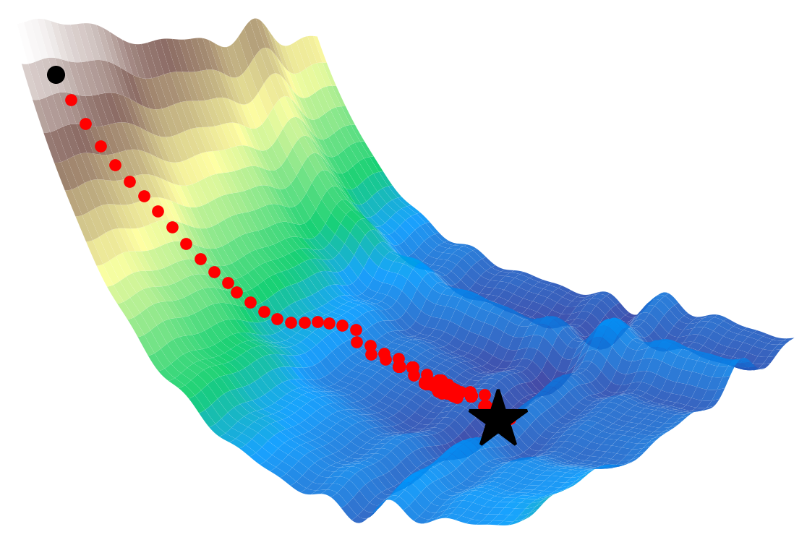

Mon/Wed 10:10 AM – 11:25 AM
102 Upson Hall (Ithaca) and 397 Bloomberg Center (Cornell Tech)
Nikita Doikov
Assistant Professor, ORIE
Email: nikita.doikov at cornell.edu
Office: 218 Rhodes Hall
Office hours: Tuesdays 11:00 AM - 12:00 PM, Thursdays 2:00 PM - 3:00 PM, and by appointment
This is a graduate-level course on the theory and algorithms of continuous optimization. It prepares students for research in optimization theory and for developing advanced methods for applications in operations research, machine learning, and related domains. The main emphasis is on understanding different classes of optimization problems and their theoretical limitations. We will rigorously study convergence rates and lower bounds for first-order and second-order optimization methods on both convex and non-convex problems, establishing the range of their applicability. Syllabus
| Homework 0 | Due on January 31 |
| Homework 1 | Due on February 21 |
| Homework 2 | Due on March 14 |
| Homework 3 | Due on April 18 |
| Practical Assignment | Due on May 5 (extended) |
| Date | Topic | Materials |
|---|---|---|
| Jan 21 | Introduction. Complexity of Optimization Problems. Grid Search. | Notes | Slides | Whiteboard |
| Canceled due to snowstorm | ||
| Jan 28 | Lower Bound for Global Optimization. Gradients. | Notes | Slides | Whiteboard |
| Feb 2 | Smooth Functions. Gradient Method for Finding Stationary Points. | Notes | Whiteboard |
| Feb 4 | Adaptive Search. Stochastic Gradient Method. | Notes | Whiteboard |
| Feb 9 | Smooth Convex Functions. | Notes | Whiteboard |
| Feb 11 | Strong Convexity. Polyak's Heavy Ball Method. | Notes | Whiteboard |
| Feb 18 | Lower Bounds for Smooth Convex Optimization. | Notes | Whiteboard |
| Feb 23 | Nesterov's Fast Gradient Method. | Notes | Whiteboard |
| Feb 25 | Applications: Machine Learning. Fully Composite Problems. | Notes | Whiteboard |
| Mar 2 | Separation. Subgradients. Binary Search. | Notes | Whiteboard |
| Mar 4 | Ellipsoid Method. | Notes | Whiteboard |
| Mar 9 | Subgradient Method. Normalized Stepsizes. | Notes | Whiteboard |
| Mar 11 | Lower Bounds for Nonsmooth Convex Optimization. | Notes | Whiteboard |
| Mar 16 | Adaptive Stepsizes for Stochastic Methods. | Notes | Whiteboard |
| Mar 18 | Smooth Stochastic Optimization II. Variance Reduction. | Notes | Whiteboard |
| Mar 23 | Applications: Min-Max Problems. Bregman Divergence. | Notes | Whiteboard |
| Mar 25 | Mirror Descent. Accuracy Certificates. | Notes | Whiteboard |
| Spring break | ||
| Apr 6 | Newton's Method. Definition of Self-Concordant Functions. | Notes | Whiteboard |
| Apr 8 | Self-Concordant Analysis. | Notes | Whiteboard |
| Apr 13 | Local Behavior of Newton's Method. | Notes | Whiteboard |
| Apr 15 | Self-Concordant Barriers. Path Following. | Whiteboard |
| Apr 20 | Interior-Point Method. | Whiteboard |
| Apr 22 | Cubic Regularization of Newton's Method. | Whiteboard |
| Apr 27 | Global Rates for Regularized Newton. | |
| Apr 29 | Quasi-Self-Concordant Functions. | |
| May 4 | TBA |
© 2026 Nikita Doikov.